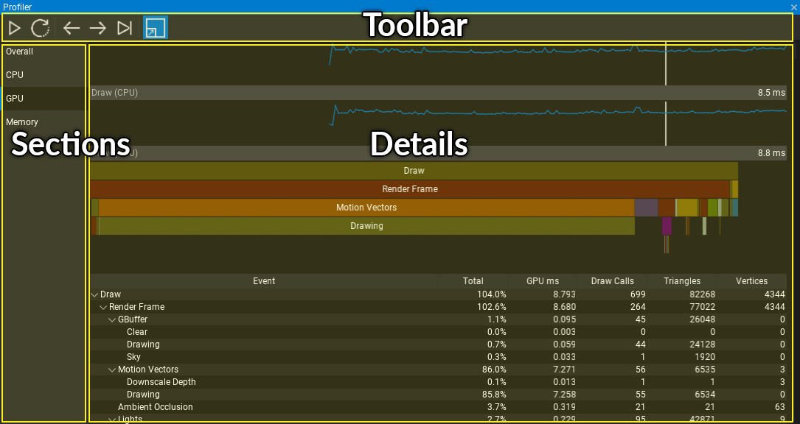

Profiler
The Profiler window provides various ways of measuring game performance and helps the optimization process. It can be used to collect data about game performance right in the Editor.
Interface

Profiler window is divided into 3 parts:
- Toolbar
- Sections list
- Details panel
Sections
Overall
The general profiling mode with major game performance charts and stats.
CPU
The CPU performance profiling mode.
To add code section to be included in profile blocks use the following code:
Profiler.BeginEvent("MyFunction");
// do something
Profiler.EndEvent();
GPU
The GPU performance profiling mode.
To add code section to be included in profile blocks use the following code:
Profiler.BeginEventGPU("MyFunction");
// do something on GPU with GPUContext
Profiler.EndEventGPU();
Memory
The memory profiling mode focused on breaking down system memory allocations. This includes separate stats for native memory allocation and managed C# allocations.